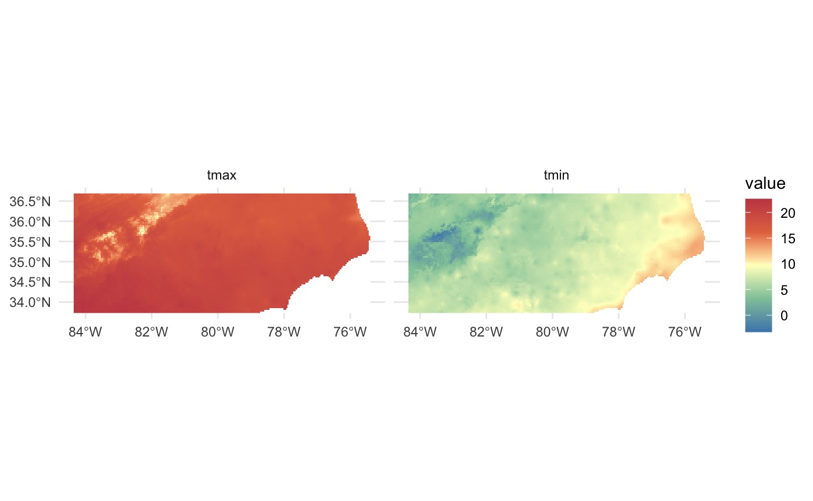
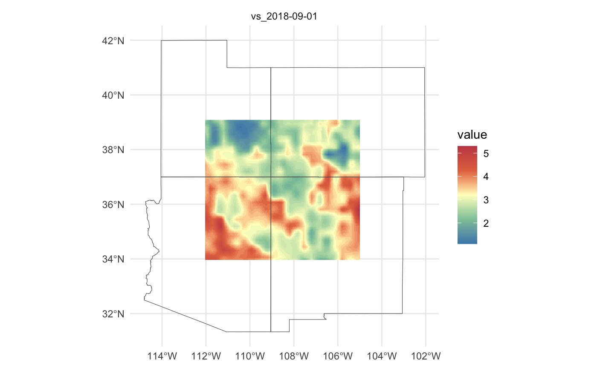
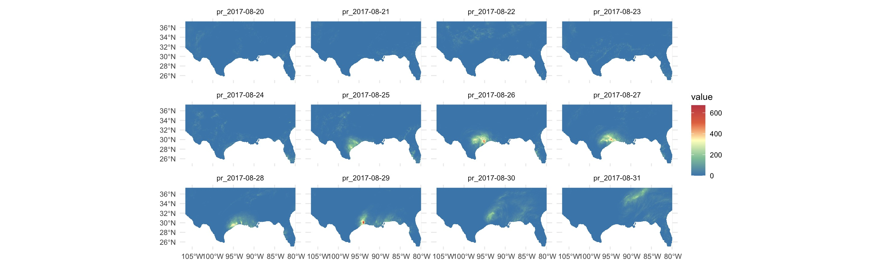
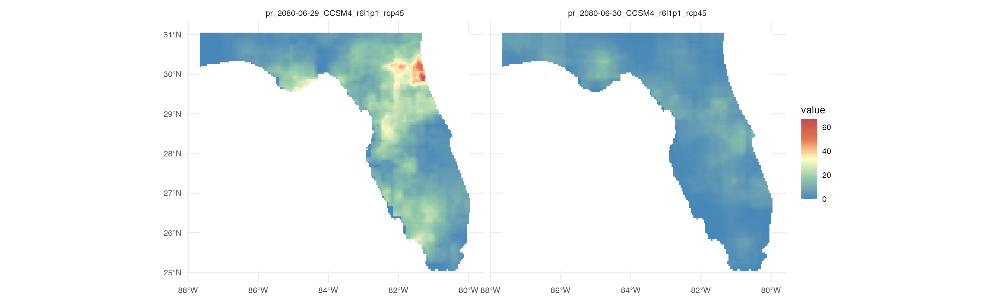
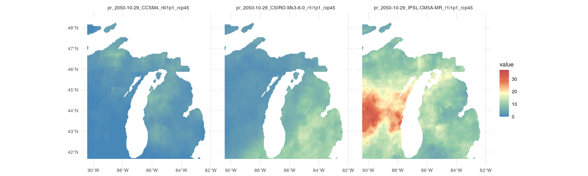
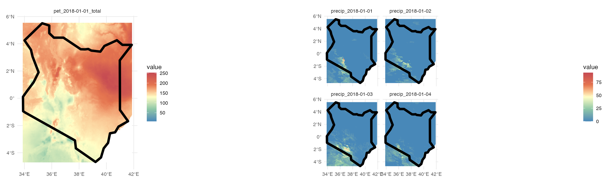
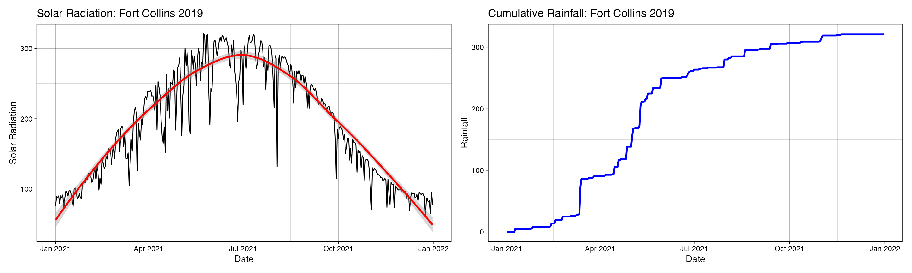
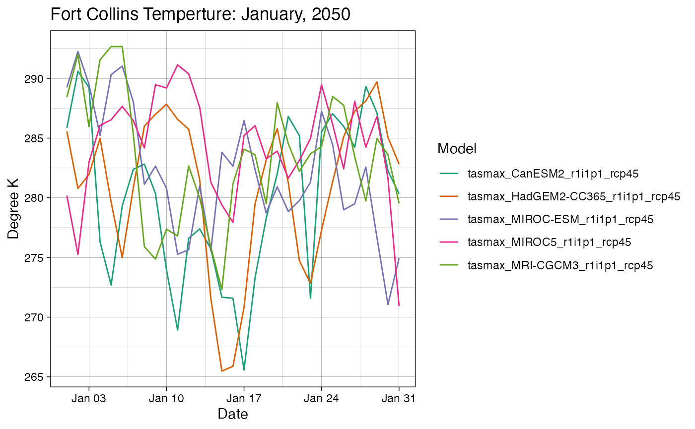
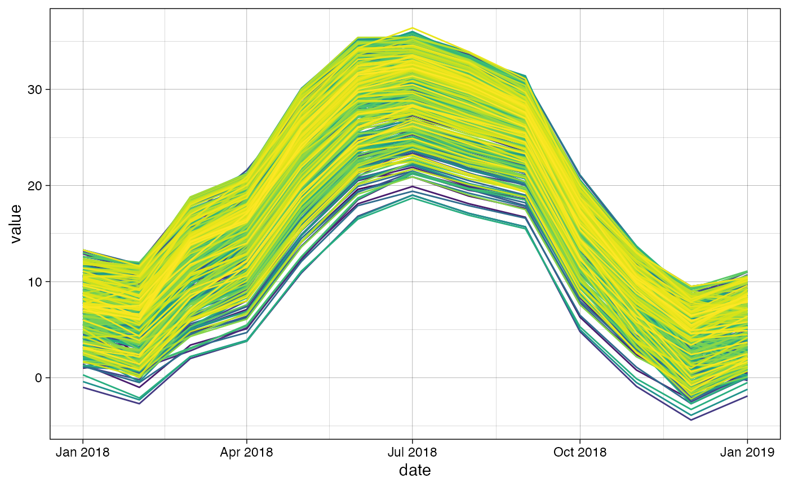

climateR examples
The climateR package is supplemented by the AOI framework
established in the AOI R package.
To get a climate product, an area of interest must be defined:
Here we are loading a polygon for the state of North Carolina More examples of constructing AOI calls can be found here.
With an AOI, we can construct a call to a dataset for a parameter(s) and date(s) of choice. Here we are querying the PRISM dataset for maximum and minimum temperature on October 29, 2018:
system.time({
p = getPRISM(AOI,
varname = c('tmax','tmin'),
startDate = "2018-10-29")
})
#> user system elapsed
#> 0.816 0.109 1.997
Data from known bounding coordinates
climateR offers support for sf,
sfc, and bbox objects. Here we are requesting
wind velocity data for the four corners region of the USA by bounding
coordinates.
AOI = st_as_sfc(st_bbox(c(xmin = -112, xmax = -105, ymax = 39, ymin = 34), crs = 4326))
g = getGridMET(AOI,
varname = "vs",
startDate = "2018-09-01")
Data through time …
In addition to multiple variables we can request variables through time, here let’s look at the gridMET rainfall for the Gulf Coast during Hurricane Harvey:
harvey = getGridMET(aoi_get(state = c("TX", "FL")),
varname = "pr",
startDate = "2017-08-20",
endDate = "2017-08-31")
ggplot() +
geom_spatraster(data = harvey$precipitation_amount) +
facet_wrap(~lyr) +
scale_fill_whitebox_c(
palette = "muted",
na.value = "white") +
theme_minimal()
Climate Projections
Some sources are downscaled Global Climate Models (GCMs). These allow you to query forecasted ensemble members from different models and/or climate scenarios. One example is from the MACA dataset:
system.time({
m = getMACA(AOI = aoi_get(state = "FL"),
model = "CCSM4",
varname = 'pr',
scenario = c('rcp45', 'rcp85'),
startDate = "2080-06-29", endDate = "2080-06-30")
})
#> user system elapsed
#> 0.130 0.019 4.669
Getting multiple models results is also quite simple:
models = c("BNU-ESM","CanESM2", "CCSM4")
temp = getMACA(AOI = aoi_get(state = "CO"),
varname = 'tasmin',
model = models,
startDate = "2080-11-29")
temp[[1]]$mean = app(temp[[1]], mean)
names(temp[[1]]) = c(models, "Ensemble Mean")If you don’t know your models, you can always grab a random set by specifying a number:

Global Datasets
Not all datasets are USA focused either. TerraClimate offers global, monthly data up to the current year for many variables, and CHIRPS provides daily rainfall data:
kenya = aoi_get(country = "Kenya")
tc = getTerraClim(kenya, varname = "pet", startDate = "2018-01-01")
chirps = getCHIRPS(kenya, startDate = "2018-01-01", endDate = "2018-01-04" )
Point Based Data
Finally, data gathering is not limited to areal extents and can be retrieved as a time series at locations.
ts = data.frame(lng = -105.0668, lat = 40.55085) %>%
sf::st_as_sf(coords = c('lng', 'lat'), crs = 4326) %>%
getGridMET(varname = c("pr", 'srad'),
startDate = "2021-01-01",
endDate = "2021-12-31")
Point Based Ensemble
future = getMACA(geocode("Fort Collins", pt = TRUE),
model = 5, varname = "tasmax",
startDate = "2050-01-01", endDate = "2050-01-31")
future_long = pivot_longer(future, -date)
ggplot(data = future_long, aes(x = date, y = value, col = name)) +
geom_line() +
theme_linedraw() +
scale_color_brewer(palette = "Dark2") +
labs(title = "Fort Collins Temperture: January, 2050",
x = "Date",
y = "Degree K",
color = "Model")
Multi site extraction
Extracting data for a set of points is an interesting challenge. It turns it is much more efficient to grab the underlying raster stack and then extract time series as opposed to iterating over the locations:
- Starting with a set of locations in Colorado:
f = system.file("co/cities_colorado.rds", package = "climateR")
cities = readRDS(f)-
climateRwill grab the SpatRaster underlying the bounding area of the points
sites_stack = getTerraClim(AOI = cities,
varname = "tmax",
startDate = "2018-01-01",
endDate = "2018-12-31")- Use
extract_sitesto extract the times series from these locations. Theidparameter is the unique identifier from the site data with which to names the resulting columns.
sites_wide = extract_sites(r = sites_stack, pts = cities, id = "NAME")
sites_wide[[1]][1:5, 1:5]
#> date ADAMSCITY AGATE AGUILAR AKRON
#> 1 2018-01-01 00:00:00 9.5 8.2 11.4 7.1
#> 2 2018-01-31 10:00:00 8.1 7.1 9.9 5.8
#> 3 2018-03-02 20:00:00 14.6 14.1 15.0 13.5
#> 4 2018-04-02 06:00:00 17.5 16.6 17.6 16.2
#> 5 2018-05-02 16:00:00 25.1 25.0 25.5 24.8To make the data ‘tidy’ simply pivot on the date
column:
tmax = tidyr::pivot_longer(sites_wide[[1]], -date)
head(tmax)
#> # A tibble: 6 × 3
#> date name value
#> <dttm> <chr> <dbl>
#> 1 2018-01-01 00:00:00 ADAMSCITY 9.5
#> 2 2018-01-01 00:00:00 AGATE 8.2
#> 3 2018-01-01 00:00:00 AGUILAR 11.4
#> 4 2018-01-01 00:00:00 AKRON 7.10
#> 5 2018-01-01 00:00:00 ALAMOSA 5.2
#> 6 2018-01-01 00:00:00 ALLENSPARK 6.10